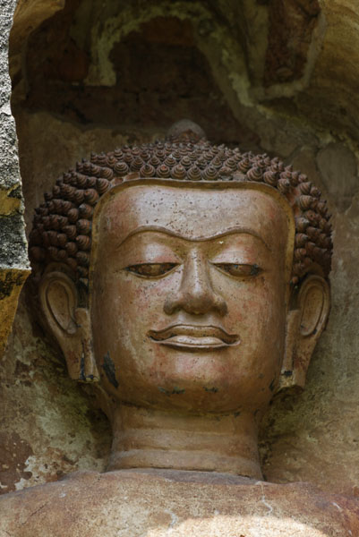

SU HISTORIA
Tailandia, también conocida como el Reino de Tailandia, tiene una rica historia que se remonta a miles de años. El país ha experimentado una sucesión de reinos y dinastías, junto con influencias culturales de India y China. En el siglo XIII, el Reino de Sukhothai se estableció y se considera el primer estado tailandés independiente. Luego, el Reino de Ayutthaya ascendió al poder en el siglo XIV y se convirtió en un importante centro comercial. Sin embargo, en el siglo XVIII, los birmanos invadieron Ayutthaya y lo destruyeron, llevando a la caída del reino.
Después de la caída de Ayutthaya, Tailandia se dividió en diferentes reinos hasta que finalmente, en 1782, se fundó el Reino de Rattanakosin con Bangkok como su capital. Bajo el reinado de Rama IV y Rama V, Tailandia se modernizó y se evitaron las colonizaciones europeas, a excepción de algunos territorios en el sureste asiático. Durante el siglo XX, Tailandia pasó por cambios políticos y sociales significativos.
El país se renombró como Tailandia en 1939 y experimentó períodos de gobierno militar intercalados con regímenes democráticos. Aunque el país logró mantenerse neutral durante la Segunda Guerra Mundial, se vio afectado por los conflictos de la Guerra Fría.
En las últimas décadas, Tailandia se ha convertido en un popular destino turístico y ha experimentado un crecimiento económico notable. Sin embargo, también ha enfrentado desafíos políticos y sociales, como protestas y cambios de gobierno. En resumen, la historia de Tailandia abarca desde antiguos reinos hasta su evolución en un país moderno, enfrentando diversas influencias y desafíos a lo largo del tiempo.